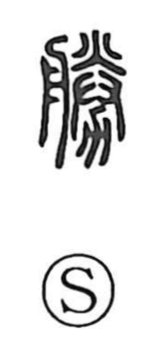

勝

Kun: katsu, masaru | On: sho
to win ・ victory ・ to excel
Explanation
A phono-semantic graph: the phonetic element 朕 belongs to a group of characters that depict goods set in a tray or boat-like dish and presented with both hands—hence their shared sense of formal offering, as seen in 賸 (presenting shell money), 媵 (a woman accompanying a bride), and 謄 (a duplicate document). The 力 component is the form of a plow. Together they portray placing the offered items upon the plow in a rite to pray for a rich harvest; from this image of securing a favorable outcome arose the meanings ‘to prevail,’ ‘to be superior,’ and ‘to win.’